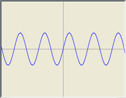
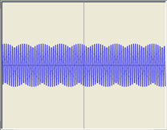
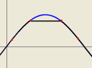

Limitations of the Function Explorer tool.
If you plot a graph where the function value changes very rapidly for small changes in x, the graph may display values other than what we expect. For example, compare the two graphs below. The left one is the graph of y = sin(3*x) and is consistent with our expectations of sine curves. On the right however is the graph of y = sin(63*x). As you can see, the peaks vary when they should all be the same height.
 |
 |
| sin(3x) | sin(63x) |
Why does this happen?
The line drawn by the grapher is actually a series of points. The graph window is 412 pixels (points) wide. For each of these points it calculates the value of the function and plots it at the appropriate y coordinate. It then links these points together with short line segments if they are not adjacent.
When pixels don't fall exactly on the peaks of the function, information is lost. If two successive pixels happen to fall on each side of a peak, it will miss the peak entirely:

This only becomes a problem when the function is changing very rapidly with x, and the function is periodic, since only then does the eye see the erroneous pattern.